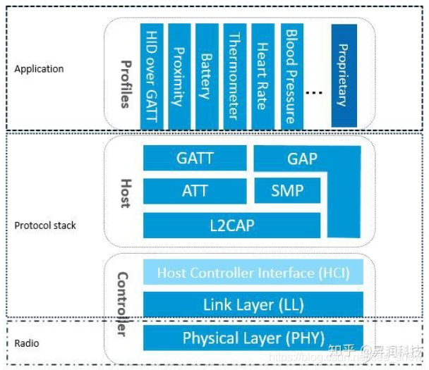
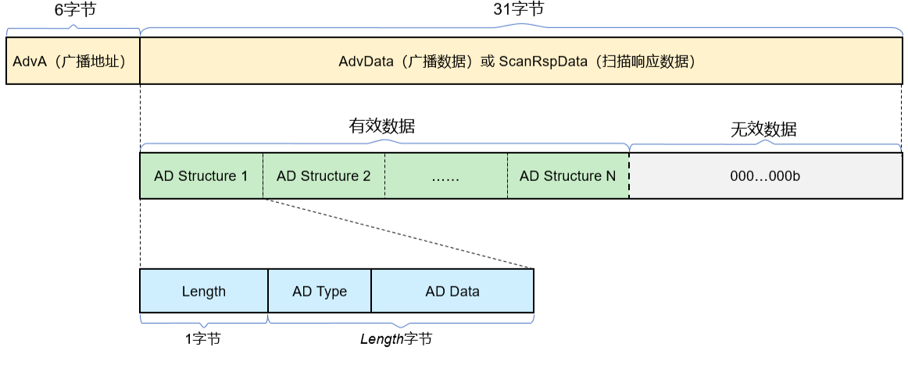
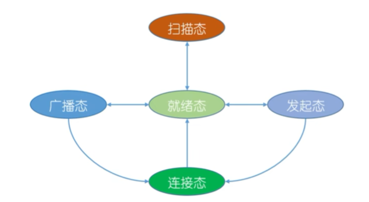

<!DOCTYPE lake>
<p data-lake-id="u4c98cea1" id="u4c98cea1" style="text-align: left"><span class="lake-fontsize-12" data-lake-id="ube974cfc" id="ube974cfc" style="color: rgb(77, 77, 77)">python蓝牙协议规定了</span><strong><span class="lake-fontsize-12" data-lake-id="u8c8e944c" id="u8c8e944c" style="color: rgb(77, 77, 77)">两个层次</span></strong><span class="lake-fontsize-12" data-lake-id="u2aaebbc2" id="u2aaebbc2" style="color: rgb(77, 77, 77)">的协议，分别为</span><span class="lake-fontsize-12" data-lake-id="u9402823b" id="u9402823b" style="color: rgb(254, 44, 36)">蓝牙核心协议（Bluetooth Core）</span><span class="lake-fontsize-12" data-lake-id="u66774c95" id="u66774c95" style="color: rgb(77, 77, 77)">和</span><span class="lake-fontsize-12" data-lake-id="uf424b2bf" id="uf424b2bf" style="color: rgb(254, 44, 36)">蓝牙应用层协议（Bluetooth Application）</span></p><p data-lake-id="uc6fd791b" id="uc6fd791b"><span class="lake-fontsize-12" data-lake-id="u0ebef09c" id="u0ebef09c" style="color: rgb(77, 77, 77)">蓝牙核心协议就是对蓝牙技术本身的规范，不涉及其应用方式</span></p><p data-lake-id="u9b16bbc9" id="u9b16bbc9"><span class="lake-fontsize-12" data-lake-id="u13d3dbe1" id="u13d3dbe1" style="color: rgb(77, 77, 77)">蓝牙应用层协议是在蓝牙核心协议的基础上，根据具体的应用需求定义出的特定策略</span></p><p data-lake-id="u84c22259" id="u84c22259"><strong><span class="lake-fontsize-12" data-lake-id="u16e01b0a" id="u16e01b0a" style="color: rgb(77, 77, 77)">蓝牙协议栈框图如下所示：</span></strong></p><p data-lake-id="u2200be09" id="u2200be09" style="text-align: center"></p><p data-lake-id="uf88bfba8" id="uf88bfba8" style="text-align: center"><br/></p><h2 data-lake-id="c4Tc2" id="c4Tc2"><span data-lake-id="uc8077ae4" id="uc8077ae4">蓝牙广播数据包</span></h2><p data-lake-id="u24fb8869" id="u24fb8869"><span data-lake-id="uf7d47950" id="uf7d47950">蓝牙广播数据包,总</span><strong><span data-lake-id="u934dc30e" id="u934dc30e">共有37个</span></strong><span data-lake-id="u7d6487fb" id="u7d6487fb">字节,</span><strong><span data-lake-id="ue77d7040" id="ue77d7040">前6个字节</span></strong><span data-lake-id="uba0d9bb5" id="uba0d9bb5">表示广播地址,</span><strong><span data-lake-id="u4dd54e70" id="u4dd54e70">后31个字节</span></strong><span data-lake-id="uad934102" id="uad934102">的广播的数据</span></p><p data-lake-id="u71457670" id="u71457670"></p><p data-lake-id="uab40854a" id="uab40854a"><span data-lake-id="u4d69eab8" id="u4d69eab8">请问下面有几个AD Structure ?</span></p><span class="yuque-card-unsupported">[codeblock]</span><h3 data-lake-id="RUlk9" id="RUlk9"><span data-lake-id="uc7035695" id="uc7035695">广播数据类型ADTYPE</span></h3><p data-lake-id="u2ae52da3" id="u2ae52da3"><span data-lake-id="u7f1e3b97" id="u7f1e3b97">广播数据类型参考：</span><a data-lake-id="u42d1a3d0" href="https://www.bluetooth.com/wp-content/uploads/Files/Specification/Assigned_Numbers.pdf?id=2289" id="u42d1a3d0" rel="noopener noreferrer" target="_blank"><span data-lake-id="u372819ac" id="u372819ac">https://www.bluetooth.com/wp-content/uploads/Files/Specification/Assigned_Numbers.pdf?id=2289</span></a></p><span class="yuque-card-unsupported">[codeblock]</span><p data-lake-id="uc0535874" id="uc0535874"><br/></p><p data-lake-id="ud3adf342" id="ud3adf342"><br/></p><h2 data-lake-id="mFOOR" id="mFOOR"><span data-lake-id="u85a7203b" id="u85a7203b">GATT与GAP协议</span></h2><p data-lake-id="ud5aedef4" id="ud5aedef4"><span class="lake-fontsize-12" data-lake-id="u89ee60c8" id="u89ee60c8" style="color: rgb(77, 77, 77)">GATT(Generic Attribute Profile)，描述了一种使用ATT的服务框架。该框架定义了服务(Server)和服务属性(characteristic)的过程(Procedure)及格式，负责处理具体数据段通过蓝牙连接的发送和接收</span></p><p data-lake-id="ue4f8089b" id="ue4f8089b"><span class="lake-fontsize-12" data-lake-id="u7a15dc2a" id="u7a15dc2a" style="color: rgb(77, 77, 77)">​</span><br/></p><p data-lake-id="u64fce4c7" id="u64fce4c7"><span class="lake-fontsize-12" data-lake-id="u0f820d0c" id="u0f820d0c" style="color: rgb(77, 77, 77)">现在的BLE大多建立在GATT协议之上，GATT建立在ATT和L2CAP之上，GATT需要使用通用访问协议GAP来确定设备的连接</span></p><p data-lake-id="ub682f8c6" id="ub682f8c6"><span class="lake-fontsize-12" data-lake-id="ube446107" id="ube446107" style="color: rgb(77, 77, 77)">​</span><br/></p><h3 data-lake-id="OspmU" id="OspmU"><span data-lake-id="u1cd2a126" id="u1cd2a126" style="color: rgb(77, 77, 77)">通用访问协议GAP</span></h3><p data-lake-id="u6c2b0311" id="u6c2b0311"><span class="lake-fontsize-12" data-lake-id="u0ca631cb" id="u0ca631cb" style="color: rgb(77, 77, 77)">GAP 使设备被其他设备可见，并决定了当前设备是否可以或者怎样与合同设备进行交互</span></p><p data-lake-id="uf9d2c720" id="uf9d2c720"><span class="lake-fontsize-12" data-lake-id="u6d2c5e34" id="u6d2c5e34" style="color: rgb(77, 77, 77)">GAP中，设备被分为外围设备Peripheral和中心设备Central</span></p><p data-lake-id="ufde94285" id="ufde94285"><span class="lake-fontsize-12" data-lake-id="u13b89e41" id="u13b89e41" style="color: rgb(77, 77, 77)">外围设备：性能相对较弱、功耗相对低的设备，他们通常被连接到更加强大的中心设备</span></p><p data-lake-id="u1225d5c0" id="u1225d5c0"><span class="lake-fontsize-12" data-lake-id="u4acebf85" id="u4acebf85" style="color: rgb(77, 77, 77)">中心设备：性能相对较强、功耗较高的设备</span></p><p data-lake-id="u2c001055" id="u2c001055"><span class="lake-fontsize-12" data-lake-id="u76ecfd6b" id="u76ecfd6b" style="color: rgb(77, 77, 77)">​</span><br/></p><p data-lake-id="u5e6573a2" id="u5e6573a2"><span class="lake-fontsize-12" data-lake-id="u38535123" id="u38535123" style="color: #DF2A3F">例如, 我们设置蓝牙的设备信息</span></p><h2 data-lake-id="I3mwL" id="I3mwL"><span data-lake-id="ua6afacdb" id="ua6afacdb" style="color: rgb(79, 79, 79)">​</span><br/></h2><h3 collapsed="true" data-lake-id="DBHpm" id="DBHpm"><strong><span data-lake-id="ub73fa259" id="ub73fa259" style="color: rgb(79, 79, 79)">通用属性协议GATT协议</span></strong></h3><p data-lake-id="u1e40599e" id="u1e40599e"><br/></p><p data-lake-id="u9299c746" id="u9299c746"><span class="lake-fontsize-12" data-lake-id="u423ebaf8" id="u423ebaf8" style="color: rgb(77, 77, 77)">​</span><br/></p><h3 data-lake-id="z3IKW" id="z3IKW"><span data-lake-id="udc12cf74" id="udc12cf74">GATT结构建立在ATT的属性Attribute数据结构之上（其实和ATT的那些东西一模一样）</span></h3><p data-lake-id="uacff7ca4" id="uacff7ca4"><span data-lake-id="u9d0ea9c0" id="u9d0ea9c0">​</span><br/></p><p data-lake-id="u4f470f4f" id="u4f470f4f"><span data-lake-id="ub36032f2" id="ub36032f2">Attribute结构体组成种类不同的Characteristic，多个Characteristic被封装在Servce容器中，Characteristic和Service容器都有着自己的UUID（有官方认证的16位UUID和自定义的128位UUID），各种常用的Service集合成Profile</span></p><p data-lake-id="u0a145310" id="u0a145310"><span data-lake-id="u1826ab3f" id="u1826ab3f">​</span><br/></p><p data-lake-id="u7e1d2bfd" id="u7e1d2bfd"><span data-lake-id="ua39e8e76" id="ua39e8e76">BLE外设的通信主要通过Characteristic，通过在Characteristic中读写数据就实现了双向通信，也可以通过实现类似串口的Service来配置TxCharacteristic和RxCharacteristic，这些都是具体项目的选择了</span></p><p data-lake-id="u7b8ca8f2" id="u7b8ca8f2"><span data-lake-id="u53f78dfa" id="u53f78dfa">​</span><br/></p><p data-lake-id="u1e8dc8d5" id="u1e8dc8d5"><br/></p><p data-lake-id="u68503e2c" id="u68503e2c"><strong><span data-lake-id="u778d9cd2" id="u778d9cd2" style="color: #DF2A3F">例如,我们想与外界进行数据交互</span></strong></p><p data-lake-id="uf59c8a46" id="uf59c8a46"><br/></p><h2 data-lake-id="bWj7U" id="bWj7U"><span data-lake-id="u174398aa" id="u174398aa">面试题</span></h2><h3 data-lake-id="V76Ma" id="V76Ma"><span data-lake-id="u6e9704f1" id="u6e9704f1" style="color: rgb(79, 79, 79)">BT与BLE的区别</span></h3><p data-lake-id="u6c255932" id="u6c255932"><span class="lake-fontsize-12" data-lake-id="uef07de5e" id="uef07de5e" style="color: rgb(77, 77, 77)">经典蓝牙统称BT，低功耗蓝牙称为BLE</span></p><p data-lake-id="u2f7bc2a6" id="u2f7bc2a6"><span class="lake-fontsize-12" data-lake-id="u5f79df83" id="u5f79df83" style="color: rgb(77, 77, 77)">​</span><br/></p><p data-lake-id="ub68ea45d" id="ub68ea45d"><strong><span class="lake-fontsize-12" data-lake-id="u8818ddaf" id="u8818ddaf" style="color: rgb(77, 77, 77)">经典蓝牙</span></strong><span class="lake-fontsize-12" data-lake-id="u1327742b" id="u1327742b" style="color: rgb(77, 77, 77)">指支持蓝牙协议在4.0以下的模块，一般用于数据量比较大的传输。</span></p><p data-lake-id="ucca66f90" id="ucca66f90"><strong><span class="lake-fontsize-12" data-lake-id="u6cc2fefd" id="u6cc2fefd" style="color: rgb(77, 77, 77)">低功耗蓝牙</span></strong><span class="lake-fontsize-12" data-lake-id="u283e16b8" id="u283e16b8" style="color: rgb(77, 77, 77)">指支持蓝牙协议4.0或更高的模块，也称为BLE模块（Bluetooth Low Energy Module）,最大的特点是成功和功耗的降低。</span></p><p data-lake-id="ua025f48c" id="ua025f48c"><br/></p><h3 data-lake-id="HYzNE" id="HYzNE"><span data-lake-id="uee305b06" id="uee305b06">蓝牙广播数据包与服务数据包有什么区别 ?</span></h3><p data-lake-id="u9f3900e7" id="u9f3900e7"><span data-lake-id="u3a59eff1" id="u3a59eff1">蓝牙广播数据包（Advertising Data Packet）和服务数据包（Service Data Packet）在蓝牙通信中有以下区别：</span></p><p data-lake-id="u7926f783" id="u7926f783"><span data-lake-id="u3055b7fb" id="u3055b7fb">​</span><br/></p><p data-lake-id="u1c18de4a" id="u1c18de4a"><span data-lake-id="u5fd47a08" id="u5fd47a08">1. 广播数据包：广播数据包是蓝牙设备在广播过程中发送的数据包。它用于向附近的设备广播自身的存在和提供的服务。广播数据包通常包含设备的标识符、服务UUID（Universally Unique Identifier）等信息。它的主要目的是让其他设备能够发现和连接到广播设备。</span></p><p data-lake-id="u6498e1ae" id="u6498e1ae"><span data-lake-id="ud2262c0c" id="ud2262c0c">​</span><br/></p><p data-lake-id="u05ecdf2e" id="u05ecdf2e"><span data-lake-id="uf66e2984" id="uf66e2984">2. 服务数据包：服务数据包是蓝牙设备在连接过程中发送的数据包。它用于在设备之间传输具体的数据和信息。服务数据包通常包含特定服务的数据内容，例如传感器数据、音频流、文件传输等。它的主要目的是在蓝牙连接中实现数据交换和通信。</span></p><p data-lake-id="ue51593a6" id="ue51593a6"><span data-lake-id="u67f294b1" id="u67f294b1">​</span><br/></p><p data-lake-id="uc2019021" id="uc2019021"><span data-lake-id="ubc15802e" id="ubc15802e">总结来说，广播数据包用于设备之间的发现和连接，而服务数据包用于连接后的数据传输和通信。</span></p><p data-lake-id="u50fa602b" id="u50fa602b"><span data-lake-id="ufa7c7c31" id="ufa7c7c31">​</span><br/></p><p data-lake-id="u43b4813b" id="u43b4813b"><span data-lake-id="u49aa6c4d" id="u49aa6c4d">在BLE（Bluetooth Low Energy）中，广播数据包和服务数据包的传输数据大小是有限制的，但它们的限制大小是不同的。</span></p><p data-lake-id="ue02b9fc2" id="ue02b9fc2"><br/></p><ol list="u23818b01"><li data-lake-id="u6cb6eda2" fid="ue0e58670" id="u6cb6eda2"><span data-lake-id="u48d7c4ee" id="u48d7c4ee"> 广播数据包大小限制：在BLE中，广播数据包的大小通常被限制为最大31字节。这包括广播数据包的有效载荷以及一些必要的控制信息。 </span></li><li data-lake-id="ucbbcf9cb" fid="ue0e58670" id="ucbbcf9cb"><span data-lake-id="u443127e6" id="u443127e6"> 服务数据包大小限制：对于服务数据包，其大小限制取决于BLE协议栈和设备的实际实现。一般来说，服务数据包可以支持更大的数据传输量，通常最大可达到512字节。 </span></li></ol><p data-lake-id="uef8d74df" id="uef8d74df"><br/></p><p data-lake-id="ufdbf5cf5" id="ufdbf5cf5"><span data-lake-id="ub2e3cdbf" id="ub2e3cdbf">需要注意的是，实际可用的数据大小可能会受到其他因素的影响，如连接间隙、信号强度等。因此，在设计BLE应用程序时，需要考虑数据大小限制以及传输效率，以确保数据的有效传输和通信。</span></p><p data-lake-id="ub6e13a98" id="ub6e13a98"><span data-lake-id="u180a9baa" id="u180a9baa">​</span><br/></p><h3 data-lake-id="vw61g" id="vw61g"><span data-lake-id="u37c9aea3" id="u37c9aea3">MTU是什么?</span></h3><p data-lake-id="u41ad7fc2" id="u41ad7fc2"><span data-lake-id="uf6ce5c4d" id="uf6ce5c4d">MTU（Maximum Transmission Unit）是指在网络通信中，数据链路层能够承载的最大数据包大小。它表示在一个单独的数据包中能够传输的最大数据量。</span></p><p data-lake-id="u619369e6" id="u619369e6"><span data-lake-id="ufaa8264e" id="ufaa8264e">​</span><br/></p><p data-lake-id="uc768469c" id="uc768469c"><span data-lake-id="uf9848b3d" id="uf9848b3d">MTU的大小是由网络设备或协议规定的，不同的网络类型和技术可能会有不同的MTU值。较常见的以太网的MTU通常为1500字节，而在某些网络中，如IPv6网络，MTU可能更大。</span></p><p data-lake-id="u6836868d" id="u6836868d"><span data-lake-id="u9556fb11" id="u9556fb11">​</span><br/></p><p data-lake-id="u85e52c48" id="u85e52c48"><span data-lake-id="uf9be2964" id="uf9be2964">MTU的设置对网络通信的效率和性能有一定影响。较大的MTU值可以减少数据包的数量和传输开销，提高传输效率。然而，如果数据包超过了网络路径上某个设备或链路的MTU限制，就会发生分片（fragmentation），导致额外的处理开销和延迟。</span></p><p data-lake-id="u9462b9d9" id="u9462b9d9"><span data-lake-id="ua1c1b683" id="ua1c1b683">​</span><br/></p><p data-lake-id="uba262a3d" id="uba262a3d"><span data-lake-id="uf10ad0bc" id="uf10ad0bc">因此，在网络通信中，合理设置和管理MTU值是重要的，以确保数据能够有效地传输和处理。</span></p><p data-lake-id="ufc026ba4" id="ufc026ba4"><span data-lake-id="u28f230c8" id="u28f230c8">​</span><br/></p><p data-lake-id="u15f13575" id="u15f13575"><span data-lake-id="uc0bfc083" id="uc0bfc083">​</span><br/></p><h3 data-lake-id="dJSph" id="dJSph"><span data-lake-id="u1079e0c9" id="u1079e0c9">蓝牙的五种状态</span></h3><p data-lake-id="u5edb1672" id="u5edb1672" style="text-align: center"></p><p data-lake-id="ub89b739e" id="ub89b739e" style="text-align: center"><br/></p><h3 data-lake-id="MVIED" id="MVIED"><span data-lake-id="uf6319ed8" id="uf6319ed8">BLE从初始化到建立连接的过程</span></h3><p data-lake-id="u8f5ecc15" id="u8f5ecc15"><span data-lake-id="uf2ecd8de" id="uf2ecd8de">BLE（Bluetooth Low Energy）从初始化到建立连接的过程可以简述如下：</span></p><p data-lake-id="u11664198" id="u11664198"><span data-lake-id="u343ee693" id="u343ee693">​</span><br/></p><p data-lake-id="u2deba67e" id="u2deba67e"><span data-lake-id="u41c22a29" id="u41c22a29">1. 初始化：BLE设备在启动时进行初始化，包括打开蓝牙模块、设置设备的名称、广播参数等。</span></p><p data-lake-id="u9f285c66" id="u9f285c66"><span data-lake-id="u84713247" id="u84713247">​</span><br/></p><p data-lake-id="u10907504" id="u10907504"><span data-lake-id="uaf8cf395" id="uaf8cf395">2. 广播：初始化后，BLE设备开始进行广播，向周围的设备发送广播数据包。广播数据包中包含设备的标识符、服务UUID等信息，用于让其他设备能够发现和连接到该设备。</span></p><p data-lake-id="ue28c984c" id="ue28c984c"><span data-lake-id="u7b6bfe40" id="u7b6bfe40">​</span><br/></p><p data-lake-id="u238e46d2" id="u238e46d2"><span data-lake-id="uefcc3fe3" id="uefcc3fe3">3. 扫描：其他BLE设备在扫描模式下可以监听并接收到周围设备发送的广播数据包。当扫描到感兴趣的设备时，可以进一步与该设备建立连接。</span></p><p data-lake-id="ube3edd3d" id="ube3edd3d"><span data-lake-id="uff49f3aa" id="uff49f3aa">​</span><br/></p><p data-lake-id="u98ce93cb" id="u98ce93cb"><span data-lake-id="ub93ccea2" id="ub93ccea2">4. 连接请求与响应：当一个设备想要与广播设备建立连接时，它发送一个连接请求给广播设备。广播设备接收到连接请求后，可以选择接受或拒绝连接。如果连接请求被接受，广播设备会发送连接响应给请求设备。</span></p><p data-lake-id="u6292c895" id="u6292c895"><span data-lake-id="u154e2c9b" id="u154e2c9b">​</span><br/></p><p data-lake-id="ucdeb1d92" id="ucdeb1d92"><span data-lake-id="ua959c0f5" id="ua959c0f5">5. 建立连接：一旦连接请求和响应成功完成，BLE设备之间建立了连接。在连接状态下，设备之间可以进行数据交换、通信和控制。</span></p><p data-lake-id="u5d89df68" id="u5d89df68"><span data-lake-id="uf17b0263" id="uf17b0263">​</span><br/></p><p data-lake-id="u117a4fa5" id="u117a4fa5"><span data-lake-id="u7c06b830" id="u7c06b830">需要注意的是，BLE的连接过程是基于主从架构的，其中一个设备充当主设备（Central）的角色，负责发起连接请求和控制连接过程；而另一个设备充当从设备（Peripheral）的角色，负责接受连接请求和提供服务。</span></p>